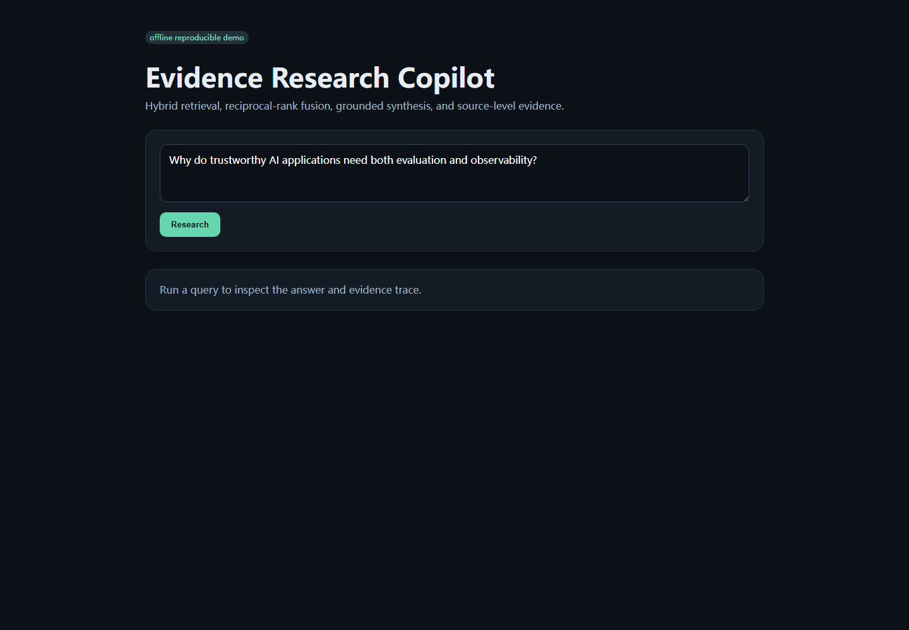

Applied AI Case Study · 2026
Evidence Research Copilot
A small, inspectable research assistant built to make retrieval quality and evidence tracing visible instead of treating RAG as a black box.

RAG demos often show an answer, but hide why the system trusted it.
I wanted the portfolio project to expose the retrieval path directly: lexical rank, semantic-style rank, fused rank, selected evidence and citations.
The offline core avoids an API dependency so a reviewer can reproduce the retrieval and evaluation behavior without credentials.
documents→chunking→BM25 + TF-IDF→RRF→grounded synthesis→citationsExact terminology is handled by BM25 while TF-IDF cosine contributes a second independent ranking signal.
Reciprocal-rank fusion combines ranked lists without pretending the raw scores are calibrated to the same scale.
A committed evaluation set measures retrieval recall, MRR and citation validity on every regression run.
Framework-light on purpose.
The retrieval and fusion logic is implemented directly so I can explain each stage. FastAPI is only the interface layer.
The project takes inspiration from evaluation-first RAG tooling such as Ragas, but does not copy Ragas source code or assets.